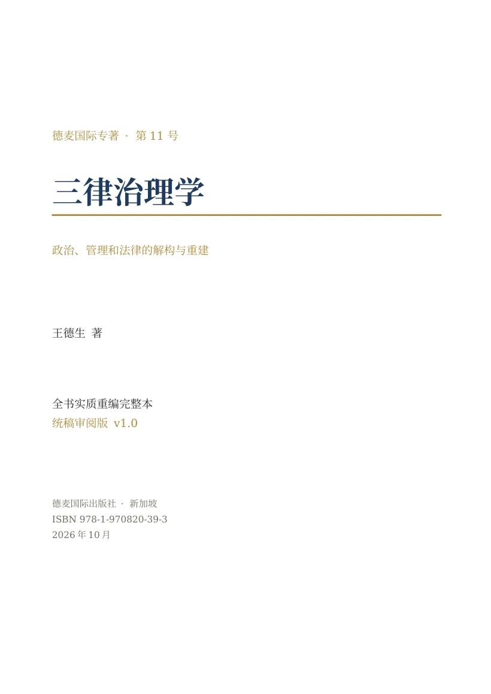

DEMAI INTERNATIONAL · MONOGRAPH 11
三律治理学
政治、管理和法律的解构与重建
治理不只是让事情按规定结束，还要使下一次共同生活能够开始。
从一间会议室、一个共同项目、一项规则的形成出发，进入权力、政治、管理和法律的发生过程，再回到知识、技术、艺术与日常共同生活。
全文开放 · 非节选
正文段落400,387个汉字；连同标题与章首引句421,567个汉字，不含编校说明与书末参考资料。此处公开完整统稿审阅版，不将公开阅读等同于正式印刷终校签认。
三条贯穿全书的追问
特征律
共同活动怎样从混沌中辨认差异，形成可以继续的身份、次序与秩序？
自由律
当条件相互牵动，已有路径怎样被选择，新的路径又怎样发生？
幸福律
张力怎样获得表达与转换，释放怎样成为继续共同生活的条件？
全书五编
- 权力发生学第101页起改变的幻觉与真实；权力的本质、伪装及政治—管理—法律三模态。
- 三律政治学第210页起自由与民主的发生条件，三律义学与义怒。
- 三律管理学第322页起从孤立单元到SIO整体，从既定价值回归到意义生成。
- 三律法学第420页起逻辑、道德、良心、正义，以及法律与权力的生成关系。
- 文明治理第556页起文明治理九宫格，知识、技术与艺术的治理及其日常展开。
作者
王德生博士，数学家、哲学研究者，SIO主客互动本体论的提出者。本书以主客互动复合整体为分析对象，研究治理中的特征、路径及张力转换。
版本与阅读提示
本版由上、下册原稿及前期实质重编稿连续统编。正文已接至全书结尾，统一目录、页码、书签与引用。新增情境标为构造案例，不作调查、临床结果或理论实证；哲学映射、事实判断与规范正当性分别论述。
医疗、法律及技术安全相关内容用于理论分析，不构成针对个人的专业建议。PDF、Word和网页保留作者审阅版本的标识。
既有原稿选读
以下入口保留原始选读版本，与本次完整重编版分开呈现。